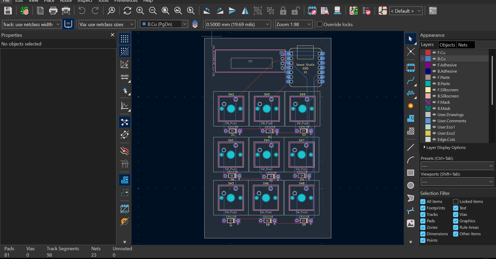

This is where I am going to add my informatics projects. Not only does this include programming,but also electronics and other stuff like updates on my server
My macropad

Description
This projects also appears in my 3D projects since it has also a pcb design part and a firmware part. Right now it is the my only finished project worth seeing.